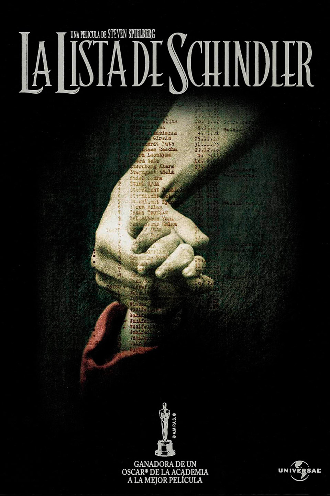

Handia
Laburpena
Lehen Karlistaldian borrokatu ostean, Martin Gipuzkoa-ko bere etxera itzuliko da, eta han, harrituta,
bere anaia Joakin ohi baino askoz ere handiagoa dela aurkituko du. Mundu osoak Lurreko gizon handiena
ikusteko ordaindu nahi izango duelakoan, bi anaiek bidaia luze bati ekingo diote. Europan zehar. Bidean,
anbizioak, diruak eta ospeak betiko aldatuko dute familiaren patua. Benetako gertakarietan oinarritutako
istorio bat.
Egileak: Jon Garaño & Aitor Arregi Galdo
Iraupena: 1h 56m
Argitaratze-data: 2017

La lista de Schindler
Laburpena
Bigarren Mundu Gerra (1939-1945). Oskar Schindler giza harremanetarako talentua duen alemaniar
enpresaburu bizizalea da Alemaniarrek Polonia inbaditu ostean Schindlerrek bere harremanei esker
Krakoviako lantegi baten jabetza lortuko du. Eundaka judu langile gisa enplegatuko ditu. Baina naziek
ez dakitena Shcindlerrek juduak kontzentrazio-esparruetatik eta heriotza ziur batetik salbatzeko bere
lantegiaz baliatzen ari dela da.
Egileak: Steven Spielberg
Iraupena: 3h 17m
Argitaratze-data: 1994

Cadena Perpetua
Laburpena
1947. urtea, AEBetako Maine estatuko Portland hiria. Bere emaztearen hilketa leporatuta Andrew
Dufresnek bizi osorako espetxera zigorra jaso eta Shawshank espetxera eramana da. Hasiera batean
espetxea jasateko gai ez zirudien pertsona ahula izan arren, urteak igaro hala, espetxeko zuzendariaren
konfiantza eta preso-kideen errespetua irabaziz joango da,bereziki Red presoarena, espetxe barneko
eroskeri mafia taldeko buruzagia dena, biak adiskide min egingo direlarik..
Egileak: Frank Darabont
Iraupena: 2h 22m
Argitaratze-data: 1995

Million Dollar Baby
Laburpena
Filmean, Morgan Freeman lankide duen boxeo entrenatzaile zaharra da Clint Eastwood. Lehenaldiko garai
ilunak garbitu nahian,Hilary Swank emakumezko boxeolari amateur gazteari profesional bihur dadin
laguntzen saiatuko da. Amaieran, eutanasiaren gaia plazaratzen du zuzendariak erronka eta testuinguru
soziala aztertzen ditu, baina, azken finean, baita sinesmen eta indarraren aurrean eragina ere.
Egileak: Clint Eastwood
Iraupena: 2h 13m
Argitaratze-data: 2005